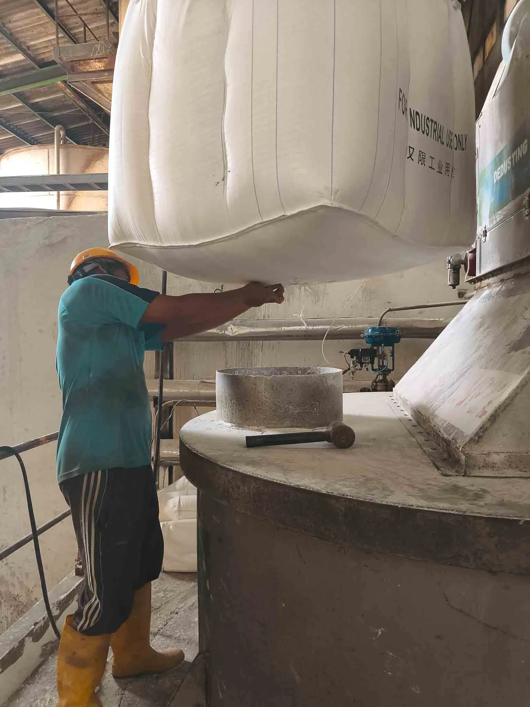
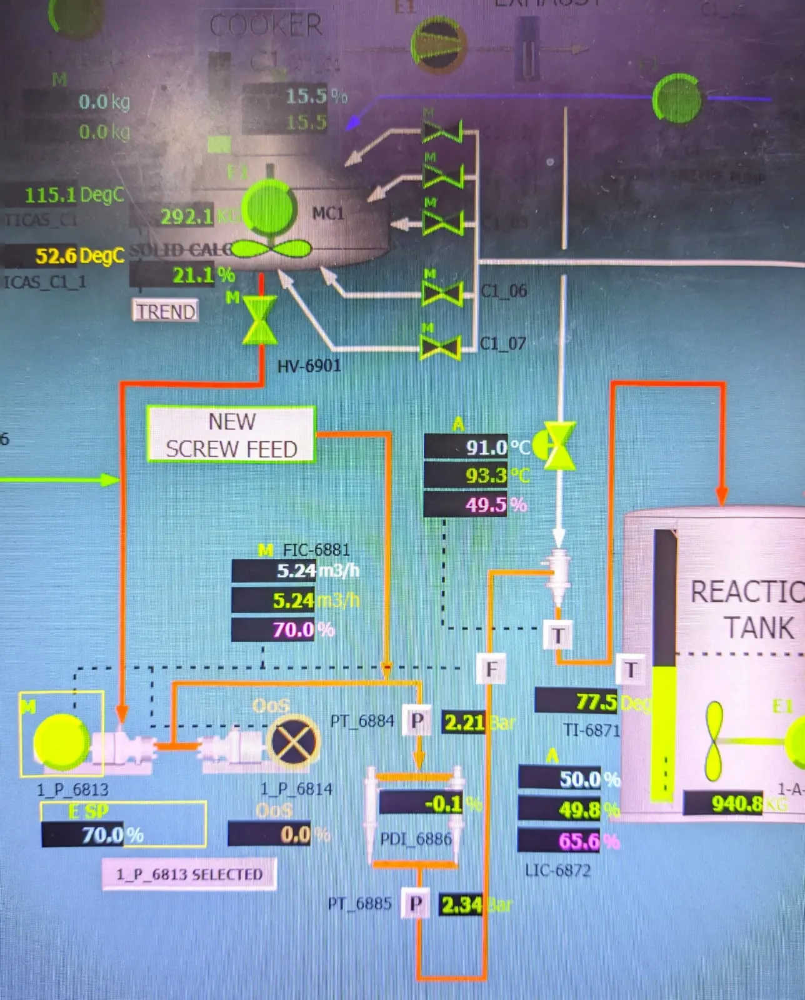
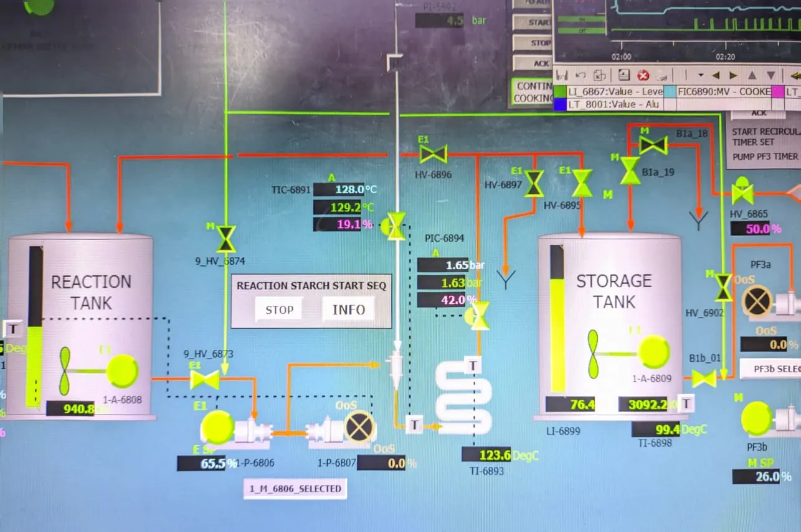
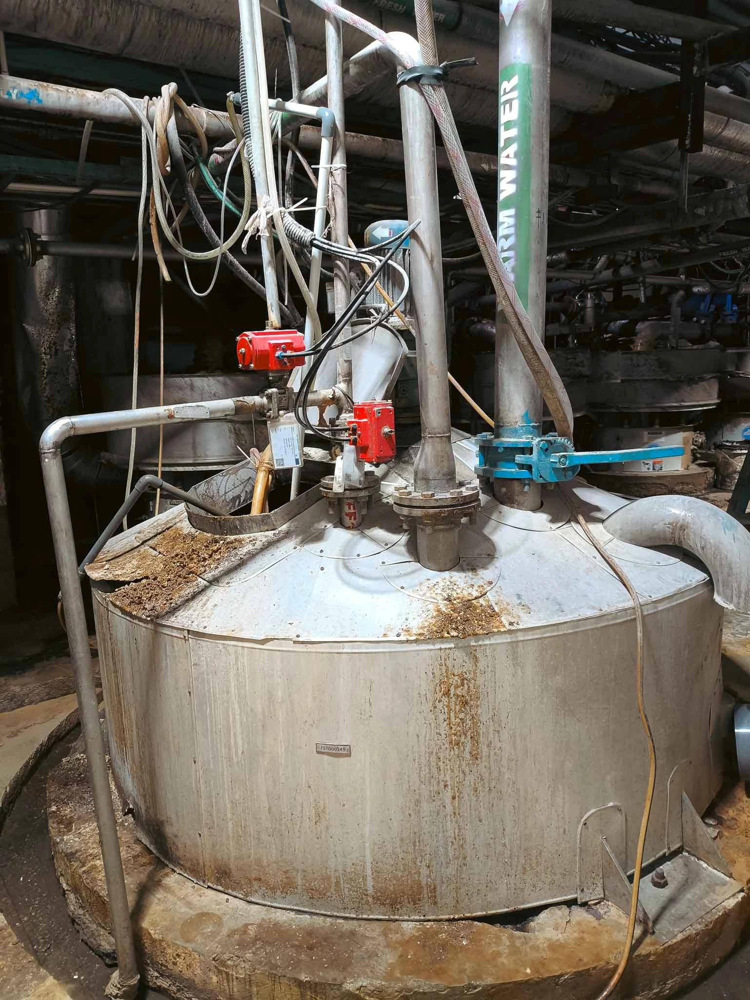

DCS Dashboard
& Management
Pusat navigasi digital, ensiklopedia alur proses, dan akses operasional. Dibangun khusus untuk memaksimalkan efisiensi dan akurasi di lapangan.
Kalkulator
SOP Harian
Data Kimia
Arsip SOP
Alur Proses Starch Preparation
Pemahaman komprehensif alur produksi kertas dari awal hingga akhir.
1. Pengenalan Persiapan Starch
Tahap persiapan starch adalah proses krusial yang menentukan kekuatan permukaan kertas. Di sini, material dasar pati dihidrolisis dan direaksikan bersama bahan kimia pendukung dengan presisi tinggi.
2. Tahap Awal: Starch Mixing
Pencampuran air dan pati mentah dalam tangki pencampur. Di tahap ini, DCS memainkan peran penting mengatur rasio konsentrasi bahan agar parameter Solid Content sesuai standar.

Pengisian Bahan (Hopper)

Agitasi Tangki Mixing
3. Proses Inti: Starch Reaction
Slurry starch dipanaskan menggunakan Jet Cooker dan direaksikan dengan Enzyme Amylase untuk mencapai viskositas target. Proses pemanasan ini sangat krusial dan dipantau ketat secara termodinamik.

Injeksi Steam (Pemanasan)

Tangki Reaktor (Hidrolisis)
4. Finalisasi & Distribusi
Puncak dari alur proses. Starch yang telah matang dan difiltrasi akan ditampung di Final Tank. Dari sini, larutan sizing akan didistribusikan secara konstan menuju mesin kertas (Size Press) untuk pelapisan.

Storage & Filtrasi

Final Tank (Distribusi Size Press)